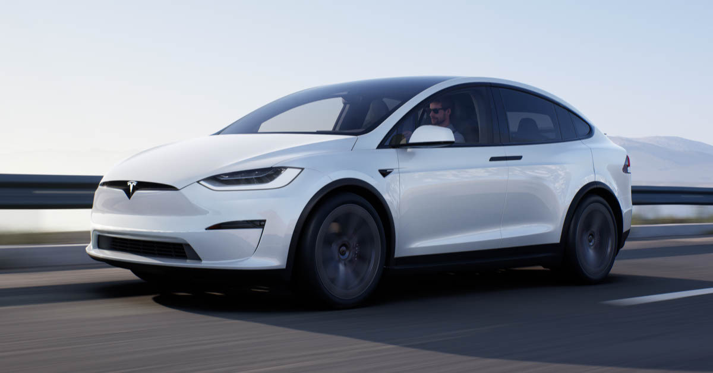

مرسدس بنز SLS AMG (C197 / R197) یک گرند تور موتور وسط جلو، 2 نفره و تولید محدود است که توسط بخش Mercedes-AMG سازنده خودرو آلمانی مرسدس بنز، با کمک دیوید کولتارد توسعه یافته است. جانشین مرسدس بنز SLR مک لارن است و توسط مرسدس بنز به عنوان جانشین معنوی مرسدس بنز 300SL Gullwing توصیف شده است، عمدتاً به این دلیل که از دومی الهام گرفته شده است. SLS مخفف "Super Leicht Sport" (Super Light Sport) است.
SLS اولین خودروی مرسدس بنز بود که کاملاً توسط AMG طراحی و ساخته شد. پس از معرفی آن در نمایشگاه خودروی فرانکفورت 2009، موتور M159 SLS AMG با قدرت 571 اسب بخار (420 کیلووات؛ 563 اسب بخار) مطابق با AMG "بیشترین موتور جهان بود". موتور قدرتمند سری تولید تنفس طبیعی" که تاکنون تولید شده است.

تسلا مدل اس یک خودروی لیفت بک با باتری است که به عنوان مدل پرچمدار شرکت تسلا عمل می کند. چیدمان چرخ محرک
توسعه مدل S قبل از سال 2007 با نام رمز "WhiteStar" آغاز شد. مدل S رسما در 30 ژوئن 2008 معرفی شد و نمونه اولیه خودرو در مارس 2009 رونمایی شد. ، در 9 اکتبر 2014 معرفی شد. 60D توسط 70D دنبال شد که موتورهای دوگانه و چهار چرخ متحرک را استاندارد کرد و به دنبال آن 85D، P85D و P90D قرار گرفتند. همراه با این به روز رسانی ها، تسلا سیستم کمک رانندگی خودکار را ارائه کرد. در آوریل 2016، مدل S با طراحی جدید کاپوت جلو به روز شد. در اکتبر همان سال، سخت افزاری استاندارد شد که از قابلیت رانندگی کامل تسلا (FSD) پشتیبانی می کرد. به عنوان بخشی از به روز رسانی، دوربین های استاندارد یکپارچه در اطراف خودرو اضافه شد. در فوریه 2017 تسلا مدل S P100D معرفی شد که شامل یک موتور اصلاح شده بود و اولین خودروی الکتریکی بود که برد تخمینی EPA بیش از 300 مایل (483 کیلومتر) داشت. بهروزرسانی تسلا مدل S با کد «پالادیوم» در ژوئن 2021 معرفی شد و یک مدل عملکرد جدید «Plaid» را همراه با فضای داخلی، پیشرانه و سیستم تعلیق اصلاحشده ارائه کرد.